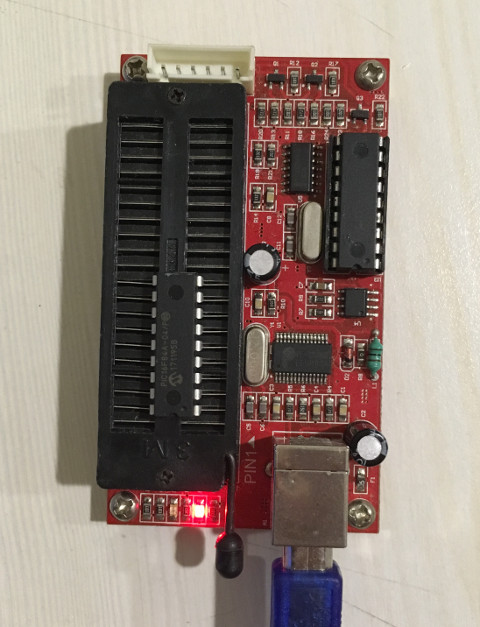

PIC16F84A
燒錄程式(PIC K150)
PIC16F84記得移到第二腳位

步驟如下：
$ cd $ wget https://github.com/steward-fu/pic16f84/releases/download/v1.0/k150.7z $ 7za x k150 $ cd k150 $ sudo ./picpro.py -i test.hex --pic_type=16f84 -p /dev/ttyUSB0 Waiting for user to insert chip into socket with pin 1 at socket pin 2 Chip detected. Erasing Chip Programming ROM Programming EEPROM Programming ID and fuses Verifying ROM ROM verified. Verifying EEPROM EEPROM verified.
P.S. K150燒錄不穩定且支援IC不及PicKit3多，建議還是購買PicKit3使用。